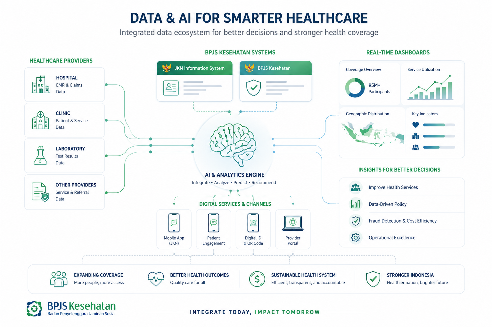
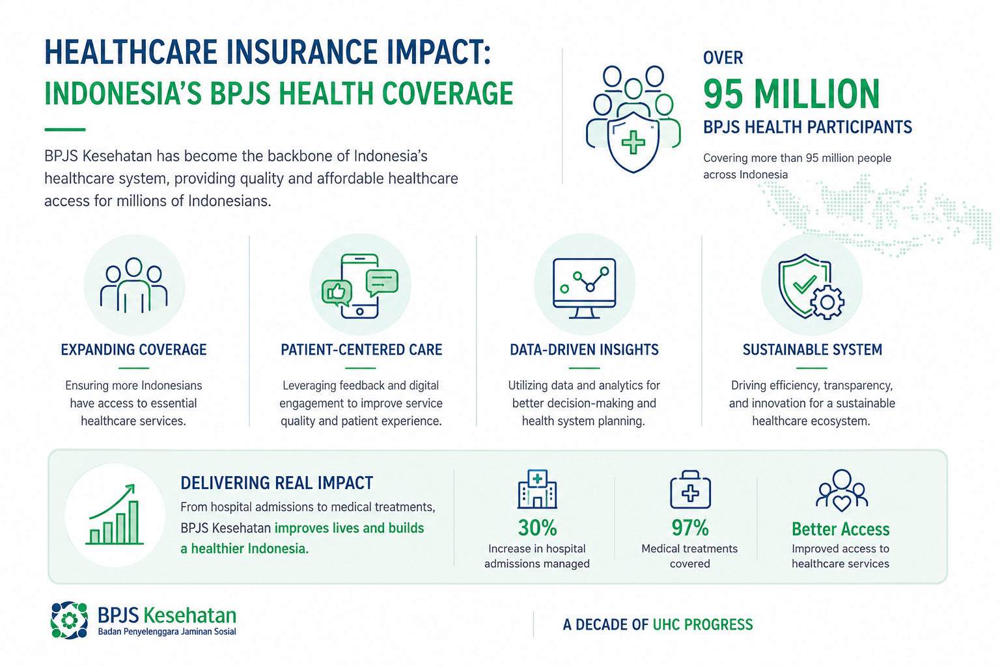

Deteksi Dini Penunggakan Iuran dengan Kecerdasan AI
Menggunakan Large Language Model (LLM) untuk mengekstrak faktor determinan dari teks tidak terstruktur — media sosial dan pengaduan — guna mencegah penunggakan iuran JKN sebelum terjadi.
12.4K
Teks Dianalisis
94.2%
Akurasi Model
Rp2.4M
Potensi Pemulihan
LLM Aktif
Gemini AI Model

EWS Aktif
Early Warning System
Fitur Unggulan
Teknologi yang Mengubah Cara BPJS Bekerja
Dari data mentah tidak terstruktur menjadi insight yang dapat ditindaklanjuti secara real-time
Fitur 01
Mesin Ekstraksi LLM Real-Time
Sistem secara otomatis memindai ribuan cuitan Twitter, laporan di platform LAPOR!, dan ulasan aplikasi JKN untuk mengidentifikasi sinyal-sinyal awal penunggakan iuran.
Analisis sentimen multi-label secara otomatis
Klasifikasi: Ekonomi, Teknis, Gateway, Administratif
Ekstraksi "latent reason" tersembunyi dari teks
Fitur 02
Early Warning System (EWS) Berbasis Data
Dashboard interaktif yang menampilkan tren lonjakan keluhan secara harian. Sistem otomatis memberi notifikasi ketika volume keluhan melebihi ambang batas kritis.
Visualisasi tren temporal per kategori determinan
Threshold alert otomatis ke tim operasional
Integrasi dengan sistem BPJS existing

Fitur 03
Trigger Aksi Otomatis & Intervensi Cerdas
Setiap keluhan yang teranalisis memicu rekomendasi aksi otomatis yang dipersonalisasi. Masalah ekonomi mendapat WA Blast program REHAB; masalah teknis menghasilkan tiket IT otomatis.
Integrasi WhatsApp Blast program REHAB BPJS
Auto-generate tiket helpdesk IT Support
Estimasi potensi pemulihan iuran per intervensi
Kemampuan Platform
Solusi Lengkap untuk Manajemen Iuran JKN
Dibangun di atas fondasi penelitian ilmiah dan teknologi AI terkini
LLM Text Mining
Menggunakan Gemini AI untuk memahami konteks dan nuansa bahasa Indonesia dalam keluhan peserta JKN dengan akurasi tinggi.
Multi-Source Data
Mengintegrasikan data dari Twitter/X, platform LAPOR!, App Store Reviews, dan saluran pengaduan resmi BPJS secara bersamaan.
Deteksi Dini Churn
Mengidentifikasi peserta yang berisiko tinggi menonaktifkan kepesertaan sebelum tunggakan terjadi dengan presisi 94.2%.
Early Warning System
Sistem peringatan dini berbasis threshold yang otomatis mengirim notifikasi ke tim operasional ketika tren keluhan melonjak.
Automated Action
Setiap insight yang diekstrak secara otomatis memicu tindakan yang tepat — dari WA Blast hingga tiket helpdesk — tanpa campur tangan manual.
Analitik Visual
Dashboard interaktif dengan visualisasi data yang kaya — tren temporal, distribusi determinan, dan peta risiko geografis peserta.
Dampak Nyata
Angka yang Berbicara untuk Keberlangsungan JKN
Data dari simulasi dan studi literatur tentang potensi dampak implementasi sistem ini
0
Teks Teranalisis/Bulan
dari berbagai sumber data
0%
Akurasi Klasifikasi
LLM pada uji validasi
0
Peserta Risiko Terdeteksi
berpotensi churn per bulan
Rp0
Potensi Pemulihan Iuran
estimasi via intervensi AI
Validasi & Insight
Didukung Riset & Data Lapangan
Insight yang ditemukan dari analisis teks nyata peserta JKN — hover untuk pause
Suami baru kena PHK bulan lalu, jadi bulan ini sekeluarga terpaksa nunggak BPJS dulu karena buat makan aja susah. Mohon pengertiannya.
D
Deteksi: Ekonomi/PHK
Trigger: WA Blast Program REHAB
Tolong dong aplikasi mobile JKN diperbaiki! Saya mau bayar tunggakan malah muter-muter aja di halaman login. Ribet banget antarmukanya bikin pusing.
T
Deteksi: Teknis/Aplikasi
Trigger: Tiket IT Support Otomatis
Udah 3 hari coba bayar lewat m-banking selalu gagal di gateway. Padahal lagi butuh buat berobat. Kalau gini mending ga usah bayar aja.
G
Deteksi: Gateway Pembayaran
Trigger: Laporan ke Tim Fintech
Saya sudah 5 bulan tidak membayar iuran karena lupa dan tidak ada yang mengingatkan. Baru tahu kalau ada program cicilan yang bisa membantu.
L
Deteksi: Administratif/Lupa
Trigger: Push Notif Reminder Otomatis
Usaha saya tutup karena pandemi, mau bayar BPJS tapi tabungan sudah habis. Apakah ada program subsidi untuk peserta mandiri yang terdampak?
U
Deteksi: Ekonomi/Usaha Kolaps
Trigger: Info Beasiswa PBI Otomatis
Suami baru kena PHK bulan lalu, jadi bulan ini sekeluarga terpaksa nunggak BPJS dulu karena buat makan aja susah. Mohon pengertiannya.
D
Deteksi: Ekonomi/PHK
Trigger: WA Blast Program REHAB
Tolong dong aplikasi mobile JKN diperbaiki! Saya mau bayar tunggakan malah muter-muter aja di halaman login. Ribet banget antarmukanya bikin pusing.
T
Deteksi: Teknis/Aplikasi
Trigger: Tiket IT Support Otomatis
Udah 3 hari coba bayar lewat m-banking selalu gagal di gateway. Padahal lagi butuh buat berobat. Kalau gini mending ga usah bayar aja.
G
Deteksi: Gateway Pembayaran
Trigger: Laporan ke Tim Fintech
Saya sudah 5 bulan tidak membayar iuran karena lupa dan tidak ada yang mengingatkan. Baru tahu kalau ada program cicilan yang bisa membantu.
L
Deteksi: Administratif/Lupa
Trigger: Push Notif Reminder Otomatis
Usaha saya tutup karena pandemi, mau bayar BPJS tapi tabungan sudah habis. Apakah ada program subsidi untuk peserta mandiri yang terdampak?
U
Deteksi: Ekonomi/Usaha Kolaps
Trigger: Info Beasiswa PBI Otomatis
Ditenagai Teknologi Terkini
Google Gemini AI
Python NLP
Chart.js Analytics
Twitter API v2
Big Data Pipeline
Transformer LLM
BPJS API
WhatsApp Business API
Google Gemini AI
Python NLP
Chart.js Analytics
Twitter API v2
Big Data Pipeline
Transformer LLM
BPJS API
WhatsApp Business API
Dashboard Analitik JKN
Deteksi dini penunggakan iuran via ekstraksi LLM dari teks tidak terstruktur
Data Simulasi Real-Time
Total Teks Dianalisis
12,450
+12.3% vs bulan lalu
Dari Twitter, LAPOR!, App Store
Risiko Churn Tinggi
3,120
+5% perlu intervensi
Peserta berpotensi nonaktif
Potensi Pemulihan Iuran
Rp 2.45M
Estimasi via intervensi AI
Dana terselamatkan bulan ini
Tren Lonjakan Keluhan (EWS)
7 Hari Terakhir
Faktor Determinan Penunggakan
Distribusi
Simulator Ekstraksi LLM
Platform analitik teks cerdas dengan Google Gemini AI
Powered by Gemini AI
Mode Input Manual & Batch CSV
Input Teks Keluhan / Cuitan
Contoh 1 (Ekonomi)
Contoh 2 (Teknis)
Contoh 3 (Gateway)
LLM sedang memproses...
Hasil Ekstraksi & Rekomendasi Aksi
Klik Analisis untuk melihat hasil ekstraksi LLM
Kategori Determinan
—
Sentimen Pelanggan
—
Alasan Tersembunyi (Latent Reason)
—
Trigger Tindakan Otomatis
—
Riwayat Ekstraksi & Eksekusi
Teks Keluhan
Determinan
Sentimen
Rekomendasi Aksi
Status Eksekusi
Riset Ilmiah
Tentang Penelitian Ini
Mengeksplorasi penerapan Large Language Model (LLM) untuk mengidentifikasi faktor-faktor determinan penunggakan iuran JKN dari data teks tidak terstruktur yang tersebar di ruang publik digital.
Latar Belakang Masalah
Tantangan Nyata yang Dihadapi JKN Hari Ini
Program Jaminan Kesehatan Nasional (JKN) menghadapi tantangan krusial: tingginya angka penunggakan iuran peserta mandiri yang mengancam keberlanjutan finansial sistem. Data BPJS Kesehatan menunjukkan jutaan peserta aktif berstatus penunggak setiap bulannya.
Pendekatan konvensional berfokus pada data terstruktur dan bersifat reaktif. Penelitian ini mengusulkan pendekatan proaktif menggunakan LLM untuk mendeteksi sinyal awal dari percakapan online.
Research Question
Bagaimana LLM dapat digunakan untuk mengekstrak faktor determinan penunggakan iuran JKN dari data teks tidak terstruktur?
Hipotesis Utama
LLM mampu mengklasifikasikan determinan penunggakan dengan akurasi >90% pada data teks bahasa Indonesia yang tidak terstruktur.
Metodologi Penelitian
Framework 4-Tahap Penelitian
01. Data Collection
Scraping Twitter, LAPOR!, dan App Reviews terkait JKN/BPJS
02. Annotation
Pelabelan manual oleh pakar bidang kesehatan & kebijakan publik
03. LLM Extraction
Prompt engineering pada Gemini AI untuk zero-shot classification
04. Validation
Evaluasi akurasi model vs. anotasi pakar & uji statistik